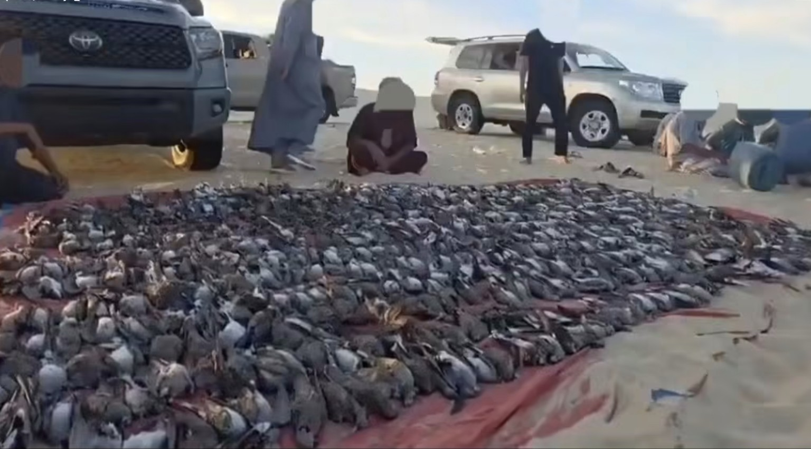
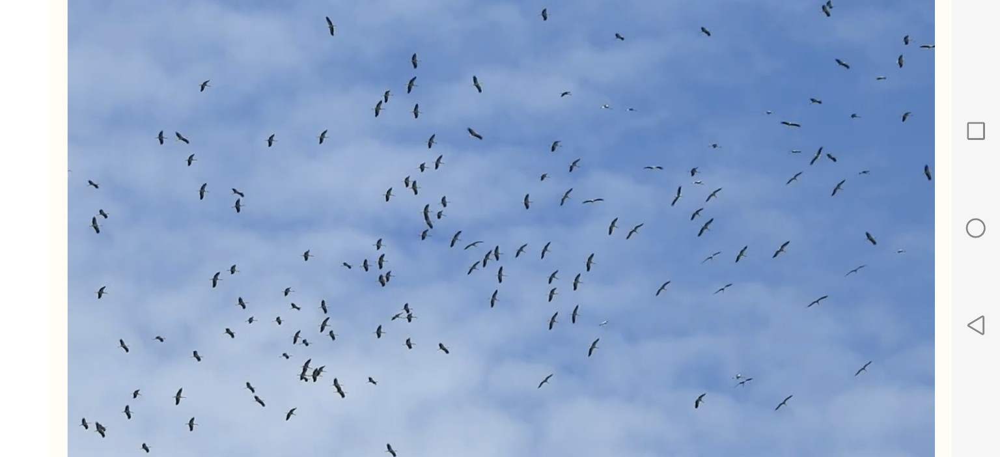

50 hunters detained and thousands of birds rescued
September 2026 saw a broad series of hunting-enforcement operations and wildlife-protection initiatives across several Arab countries, alongside the opening of regulated hunting seasons and programmes to rescue, release and breed wild species.
Figures compiled by the monthly Sayd Arab Radar show that 50 hunters were detained or apprehended in the cases covered by the report. Saudi authorities reported the seizure of 294 trapped wild animals, while thousands of birds were rescued or released. Firearms and ammunition were also confiscated, and extensive illegal bird-catching nets were removed.
Sayd Arab Radar is a monthly record of announced figures and developments involving terrestrial and marine hunting, violations and seizures, wildlife rescue, release and breeding, and regulatory or conservation measures across the Arab world.
September at a glance
| Indicator | Announced total |
|---|---|
| Hunters and individuals detained or apprehended | 50 |
| Trapped wild animals seized in Saudi Arabia | 294 |
| Birds rescued or released inside Arab countries | At least 2,130 |
| Goldfinches released in Spain in an Algeria-linked trafficking case | 1,320 |
| Spiny-tailed lizards released into the wild | More than 140 |
| Birds transferred to a breeding programme in Morocco | 18 |
| Hunting firearms seized | 23 |
| Ammunition seized in Saudi Arabia | 3,521 rounds |
| Illegal nets removed in Lebanon | 20,640 square metres |
| Illegal nets removed in Egypt | 6,600 linear metres |
Violations and seizures
| Announcement date | Country | Case | People | Birds or wildlife | Seizures |
|---|---|---|---|---|---|
| 14 September | Lebanon | Illegal hunting with nets and limesticks in Dinniyeh | 3 | Goldfinches, number unspecified | One shotgun, nets, limesticks and cages |
| 20 September | Oman | Marine fishing violation in Duqm | 1 | Sardines, quantity unspecified | One fishing boat |
| 21 September | Oman | Marine fishing violations in Al Ashkharah | 7 | Unspecified | Three boats; five vessels cited |
| 24 September | Lebanon | Removal of a large bird-catching net in the Bekaa | — | — | 20,640 sq m of nets |
| 25 September | Lebanon | Action against raptor hunters in northern Lebanon | 3 | Sparrowhawk and honey buzzard; additional protected birds documented killed | Three shotguns |
| 25 September | Oman | Marine fishing violation in Dhofar | 10 | Squid, quantity unspecified | Four boats |
| 27 September | Kuwait | Hunting weapons seized during a security campaign on Failaka Island | 7 | Unspecified | Four hunting weapons |
In Libya, Al-Barari Organization for Nature Conservation published disturbing images of very large turtle-dove catches. It also documented two freezers, each labelled as containing 1,000 pigeons. The organization warned that turning hunting into a competition based on displaying large bags directly contributes to the depletion of migratory birds.

Terrestrial hunting violations in Saudi Arabia
| Announcement date | People | Trapped wildlife | Firearms | Ammunition |
|---|---|---|---|---|
| 1 September | 4 | 18 | 2 | Unspecified |
| 15 September | 3 | 16 | 1 | Unspecified |
| 18 September | 2 | 4 | 2 | 39 |
| 22 September | 2 | 2 | 2 | 114 |
| 24 September | 3 | 117 | 2 | 358 |
| 25 September | 1 | 22 | 3 | 2,700 |
| 28 September | 2 | 52 | 2 | 250 |
| 29 September | 1 | 63 | 1 | 60 |
| Total | 18 | 294 | 15 | 3,521 |

Rescue, release and breeding
| Announcement date | Country | Action | Species | Number |
|---|---|---|---|---|
| 9 September | Saudi Arabia | Release in King Khalid Royal Reserve | Spiny-tailed lizard | More than 140 |
| 11 September | Algeria | Birds released after a customs seizure | European goldfinch | 30 |
| 13 September | Iraq | Raptors seized at Al-Ghazl market and released in the Anbar desert | Rare raptors, including steppe eagles | Unspecified |
| 18 September | Morocco | Transfer to a conservation-breeding programme | Andalusian buttonquail | 18 |
| 30 September | Egypt | Rescue and release of live migratory birds | Multiple species | About 2,100 |
Illegal hunting equipment removed
| Announcement date | Country | Equipment removed or seized |
|---|---|---|
| 24 September | Lebanon | 20,640 sq m of bird-catching nets in the Bekaa |
| 30 September | Egypt | 6,600 metres of nets, six sound devices and ten trapping installations |
Cross-border trafficking
| Announcement date | Route | Case | Outcome |
|---|---|---|---|
| 11 September | Spain–Algeria | Attempted trafficking of goldfinches in 30 boxes aboard a ferry bound for Oran | 1,500 birds seized; 1,320 released; 90 treated; 90 dead; one person detained |
Hunting regulation and conservation measures
| Announcement date | Country | Decision or initiative |
|---|---|---|
| 1 September | Saudi Arabia | Sustainable hunting season opened until 31 January 2027; permitted species increased to 30, the national quota by 11%, and licences by 34% |
| 1 September | Qatar | Regulated traditional hunting season opened until 15 February 2027 |
| 17 September | Jordan | Wild-pigeon season announced until 29 November, with a ten-bird limit per licensed hunter per trip and the collared dove excluded |
| 20 September | Libya | Hunting prohibited at five locations during the autumn and return migration seasons |
| 22 September | Tunisia | Hunting-season order published, setting periods, species and areas |
| 30 September | Lebanon | The terrestrial hunting season remained officially closed through the end of September because no opening decision had been issued |
Extended monitoring figures announced in September
| Announcement date | Country | Indicator |
|---|---|---|
| 10 September | United Arab Emirates | More than 800 wild animals rescued in Abu Dhabi since 2023 |
| 15 September | Sudan | Thirty-six bird species recorded in an acacia forest during field monitoring |
| 25 September | Morocco | Sixty-one Rüppell’s vultures ringed, including four fitted with satellite transmitters |
The September radar reflects expanding enforcement, rescue and regulatory activity, but it also reveals wide differences between countries in official reporting and the availability of numerical data. The figures cover incidents announced by authorities and verifiable organizations; they are not a comprehensive count of all hunting violations across the Arab world.